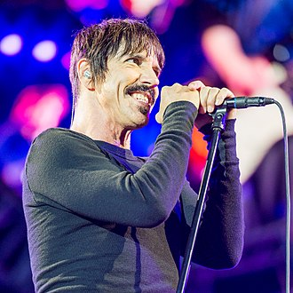
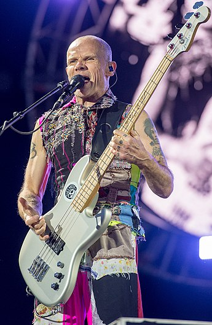
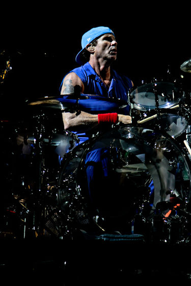
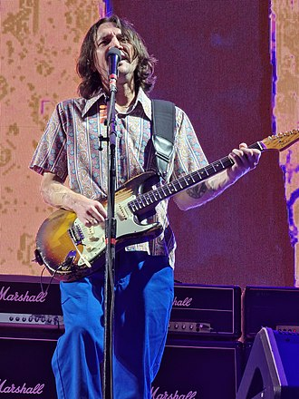
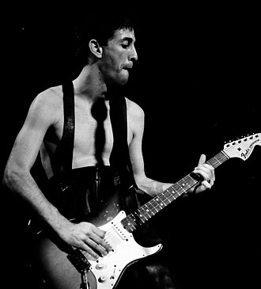

Formación Actual

Anthony Kiedis
Anthony Kiedis (Grand Rapids, Míchigan; 1 de noviembre de 1962). Vocalista

Flea
Michael Peter Balzary (Melbourne, Victoria, 16 de octubre de 1962), conocido como Flea. Bajista, Coros

Chad Smith
Chad Gaylord Smith (Saint Paul, Minnesota; 25 de octubre de 1961). Baterista

John Frunsciante
John Anthony Frusciante (Nueva York, 5 de marzo de 1970). Guitarrista, Coros
Ex Miembros / Temporales
Josh Klinghoffer
Josh Adam Klinghoffer (Los Ángeles, California; 3 de octubre de 1979). Guitarrista
Dave Navarro
David Michael «Dave» Navarro (Santa Mónica, California, 7 de junio de 1967). Guitarrista

Hillel Slovak
Hillel Slovak (Haifa, Israel; 13 de abril de 1962 - Los Ángeles, California; 25 de junio de 1988). Guitarrista
Jack Irons
Jack Irons (n. Los Ángeles, California; 18 de julio de 1962). Baterista